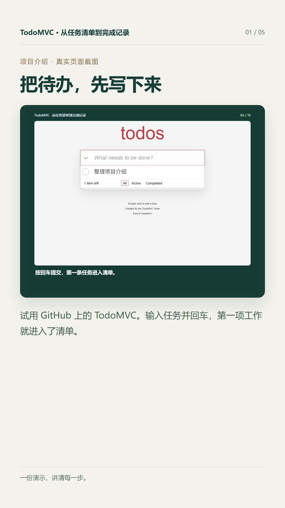
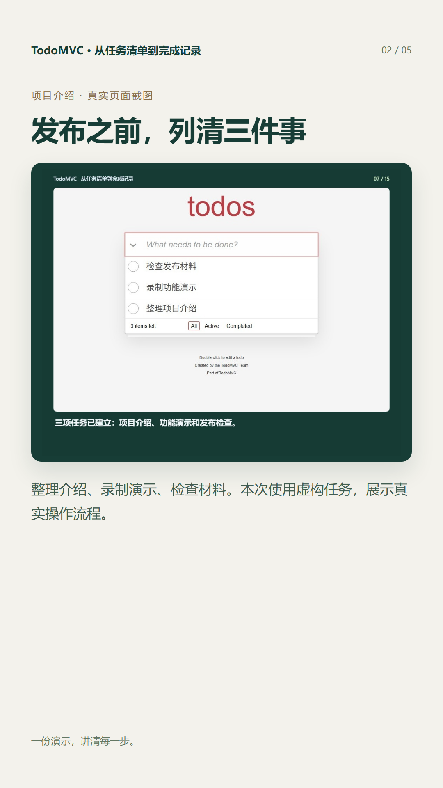
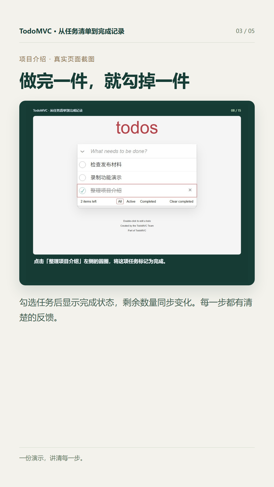
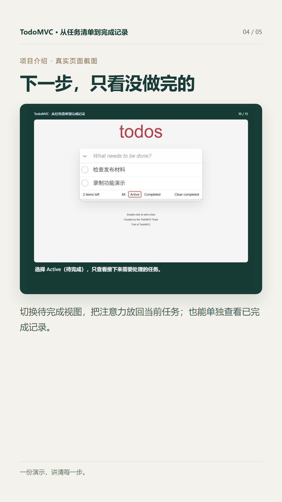
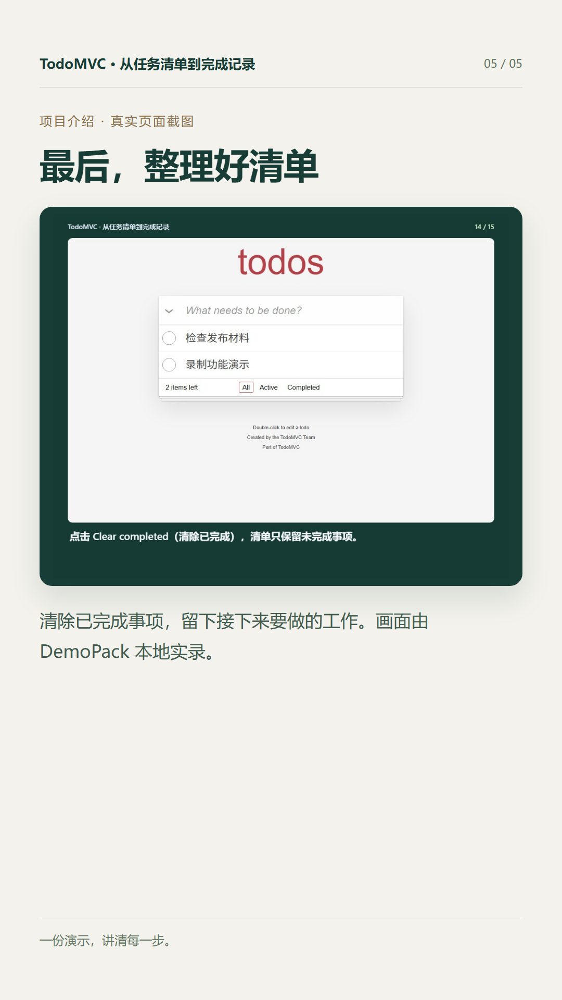

TodoMVC 是 tastejs 在 GitHub 维护的待办应用示例集合，用同一类任务管理功能展示不同前端技术的实现。本次选用 JavaScript ES6 示例，由 DemoPack 在本地真实运行并导出材料。
完整浏览器演示 · 15 个步骤 · 人工填写中文字幕
18.0 秒 · 6 个真实片段 · 保留原字幕与播放速度
30.0 秒 · 1080 × 1920 竖屏 · 5 张卡片 · 无配音或音乐





作者提供的功能、使用方式与限制说明。工具负责整理排版，不自动推断项目能力。